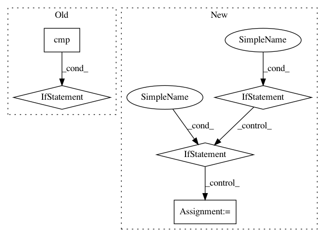

63c74040400e0c4c100f41dd79515d2fbbd9207f,scipy/lib/_version.py,NumpyVersion,_compare_version,#NumpyVersion#Any#,78
Before Change
def _compare_version(self, other):
Compare major.minor.bugfix
vercmp = cmp(self.major, other.major)
if vercmp == 0:
vercmp = cmp(self.minor, other.minor)
if vercmp == 0:
vercmp = cmp(self.bugfix, other.bugfix)
return vercmp
def _compare_pre_release(self, other):
Compare alpha/beta/rc/final.
After Change
def _compare_version(self, other):
Compare major.minor.bugfix
if self.major == other.major:
if self.minor == other.minor:
if self.bugfix == other.bugfix:
vercmp = 0
elif self.bugfix > other.bugfix:
vercmp = 1
else:
vercmp = -1
elif self.minor > other.minor:
vercmp = 1
else:
vercmp = -1
elif self.major > other.major:
vercmp = 1
else:
vercmp = -1
return vercmp
def _compare_pre_release(self, other):
Compare alpha/beta/rc/final.
In pattern: SUPERPATTERN
Frequency: 3
Non-data size: 5
Instances
Project Name: scipy/scipy
Commit Name: 63c74040400e0c4c100f41dd79515d2fbbd9207f
Time: 2013-12-26
Author: ralf.gommers@googlemail.com
File Name: scipy/lib/_version.py
Class Name: NumpyVersion
Method Name: _compare_version
Project Name: scipy/scipy
Commit Name: 7bf254851c9df3b07227a7172bbde4fdf58d0b13
Time: 2013-12-25
Author: ralf.gommers@googlemail.com
File Name: scipy/lib/_version.py
Class Name: NumpyVersion
Method Name: __cmp__
Project Name: scipy/scipy
Commit Name: 63c74040400e0c4c100f41dd79515d2fbbd9207f
Time: 2013-12-26
Author: ralf.gommers@googlemail.com
File Name: scipy/lib/_version.py
Class Name: NumpyVersion
Method Name: _compare_pre_release